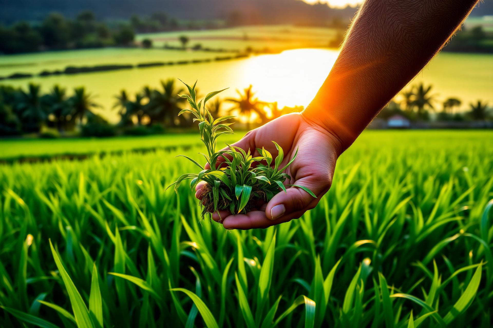
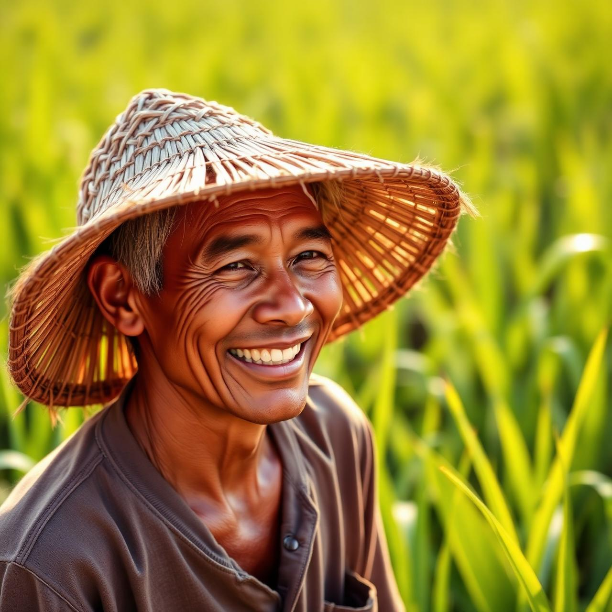

Tumbuh dengan
Golden Agro
Ekosistem pertanian terintegrasi — bibit unggul, nutrisi presisi, dan pendampingan agronom untuk panen melimpah era modern.
Empat pilar untuk pertanian presisi.
Bibit Unggul
Varietas pilihan dengan produktivitas teruji laboratorium.
Distributor Resmi
Produk asli langsung dari produsen tepercaya.
Distribusi Cepat
Jaringan logistik se-Kalimantan Selatan dan sekitarnya.
Pendampingan Ahli
Tim agronom profesional siap konsultasi gratis.

Dari tanah Kalimantan, untuk panen Indonesia.
Golden Agro adalah ekosistem pertanian modern yang menyatukan ketelitian agronomi, teknologi nutrisi tanaman, dan komitmen pada petani Kalimantan Selatan.
Solusi lengkap, dari benih hingga panen.
Bibit & Benih Unggul
Padi, jagung, sayuran, hortikultura.
Pupuk & Nutrisi
NPK, ZA, pupuk daun, pupuk organik.
Pestisida & Fungisida
Perlindungan tanaman menyeluruh.
Alat Pertanian
Sprayer, alat panen, mesin pertanian.
Pakan Ternak
Ayam, sapi, kambing, dan ikan.
Konsultasi Agronomi
Diskusi gratis bersama agronom.
Siap menuai panen emas?
Konsultasi gratis dengan tim agronom kami atau kunjungi langsung toko kami di Banjar Baru.